Каким будет твой СТАРТ?
Решать только тебе. Мы лишь гарантируем, что твоя жизнь разделится на «до» и «после».
Подать заявкуТринадцатый
Межрегиональный
студенческий форум
Школа творческого
развития
«Старт»
Тысяча возможностей
Не можешь определить свой талант? Пытаешься найти свой жизненный путь? Встал на месте и не знаешь, как и куда двигаться дальше?
«Старт» даст тебе ответы на все эти вопросы. Подарит вдохновение, осознанность, знания, новых друзей и развитие. Встав на этот путь, уже не сможешь остановиться.
За 5 дней пребывания в окружении единомышленников и самых творческих студентов города ты поймешь, кто ты такой и что тебе на самом деле нужно.
Позволь подсказать тебе: для начала нужно только подать заявку на участие и прийти на кастинг 22 февраля (кастинг только для студентов ННГУ).
Подать заявку
Что ждет тебя в Старте
Личная стратегия развития
Ты поймешь, как стать лучше, какие конкретные шаги для этого предпринять
Работа в команде
Навык, который точно пригодится тебе в реальной жизни
Нетворкинг
Построение коммуникаций с новыми людьми
Творчество и креативность
В самом широком смысле, выход за рамки стандартного мышления
Эмоции
Те, которые ты сможешь получить только здесь
В Старте понимаешь, что всегда и везде есть люди круче тебя. Понимаешь, что нужно работать, даже когда хочется отдыхать. Учишься с благодарностью принимать каждую данную возможность, из ошибок и поражений извлекать только выгоду и забивать на них. Сумасшедший личностный рост, точнее, пока что толчок к нему.
Старт 2017
Я ехала сюда за одним, а получила совсем другое, нечто более важное для меня. Старт мне придал уверенности в себе и своих действиях для достижения моих целей. А это для меня много. Хочу сказать большое спасибо всем организаторам и всем остальным, кто вложился в этот проект. Из искры рождается пламя!
Старт 2017
Хочу в сотый раз сказать спасибо. Спасибо за те эмоции, что мы испытывали каждый день. Спасибо за творчество, которым нас вдохновляли и поражали. Спасибо за опыт, безвозмездно дарованный нам. Сколько смеха и слез было за эти 5 дней, сколько талантливых людей в одном месте. Это невероятно. Думаю, теперь я смогу стать другим человеком. Спасибо и за это.
Старт 2015
Выдающиеся выпускники
Мария Скаржевская
Автор и создатель проекта
- Директор по управлению розницей
Оптики Кронос
Артем Мещеряков
Участник Старт 2007, эксперт форума с 2016 года
- Креативный директор и партнер креативного агентства «Friendship»
- Генеральный директор и партнер
парикмахерской «POPS»
Дмитрий Сахно
Один из создателей проекта
- Телеведущий Comedy Club Region
- Ведущий премиум событий в России и Мире
- Участник проекта TOPSHOWMEN
- Вел мероприятия для: Лукойл, Газпром,
Сбербанк, BMW, Сибур и др.
Таня Старикова
Участник Старт 2010, организатор форума с 2011 года
- Видеоблогер (300 тыс. подписчиков, 15 млн. просмотров)
- Основатель бренда ироничной одежды «Стирка»
- Автор лекций о позитивном мышлении и о построении персонального бренда
- Ведущая, TED-спикер
Дима Гаврилов
Участник Старт 2012
- Стендап-комик
- Участник шоу «Открытый микрофон» на ТНТ
- Участник Stand Up на ТНТ
Организаторы
Центр Творчества Студентов объединил самых активных Студентов ННГУ. Вот уже 12 лет мы организовываем проекты как в стенах университета, так и за его пределами. Мы знакомим старшеклассников с университетом на проекте «Шаг Вперёд», раскрываем творческий потенциал Студентов во время «Осенних Дебютов» и «Студенческой весны», образовываем Студентов и образовываемся сами на «Лимоне» и меняем жизни людей в «Старте».
Что для тебя важнее — самореализация, тёплые взаимоотношения, развитие? В нашей команде сочетаются все эти вещи. Просто шагни нам навстречу.
Хочешь в Старт?
Оставь заявку и получи e-mail с подробной инструкцией
о том, как попасть на форум!
* Для студентов ННГУ мы проводим кастинг. Отправляй заявку и следи за обновлениями в соц. сетях.
 
